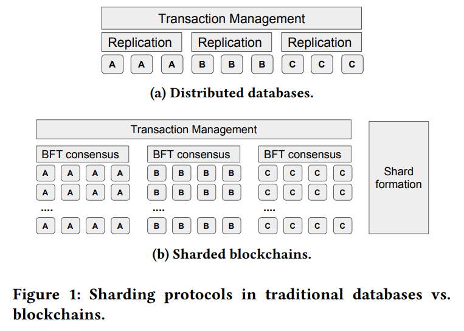
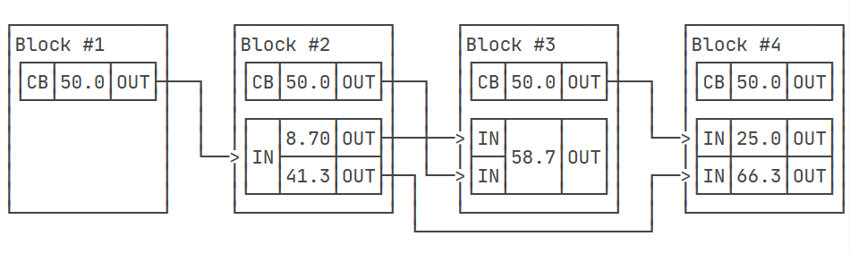
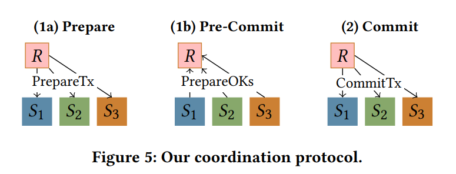
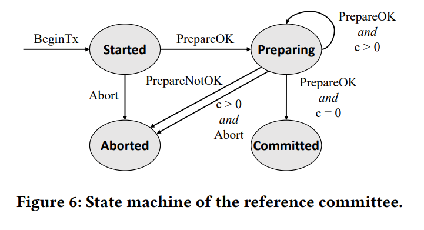
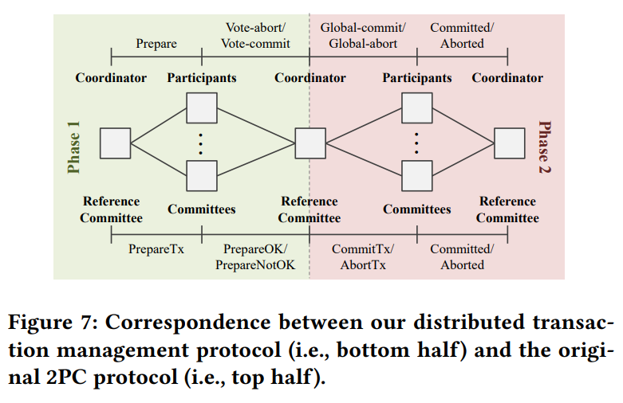
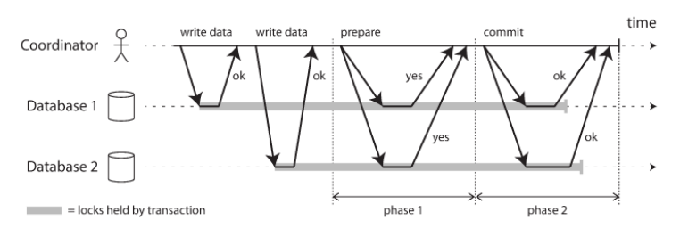

Abstract
-
“Scaling blockchain systems under general workloads remains an open question”.
-
The challenges of scaling are different between databasebases and blockchain since they have different failure models.
The major contribution of this paper:
-
Enhance the performance of Byzantine consensus protocols -> inprove the individual shard’s throughput.
-
Design an efficient shard formation protocol -> leverage a trsted random beacon to securely assign nodes into shards.
-
Design a general distributed transaction protocol -> ensure safety and liveness even when transaction coordinators are malicious.
-

Introduction
The tradeoff between strong security and scalability (the consensus protocol blockchain systems have to rely on is scalable poorly)
-
on hardware aspect -> “trusted hardware has not been demonstrated on data-intensive blockchain workloads”
-
sharding -> divide the blockchain network into small committees to reduce the overhead of consensus protocols
-
This paper extend sharding to permissioned blockchian systems
BFT consensus protocols in trusted execution environment(TEE)
Leveraing trusted execution environment to eliminate equivocation(provide different values to its neighbors) in the Byzantine failure model -> achieve higher fault tolerance with the same number of nodes [(n-1)/3 - > (n-1)/2].
No necessary to understand too many details
Efficient shard formation protocol
Leverage the TEE to design an efficient and secure shard formation protocol -> implement a trusted randomness beacon inside the TEE to generate unbiased random values in a distributed setting
The nodes derive their committee assignment by computing a random permutation pi [1 : N] seeded by rnd. pi is then divided into approximately equally-sized chunks, each of which represents the members in one committee. To exploit TEEs to efficiently obtain rnd. Each new epoch correspondings to a new node-to-committee assignment, nodes invoke the enclave with an epoch number e to generate two random values q and rnd. If and only if q = 0. <e,rnd> is broadcasted to the network. After a time theta, nodes lock in the loweast rnd they receive for current epoch e, then use it to compute the committee assignment.
No necessary to understand too many details (Committee size, Shard Reconfiguration)
UTXO transactions
Consists of a list of inputs, and a list of outputs. All the inputs must be the outputs of previous transactions that are unspent. The outputs of the transaction are new, unspent coins. (Given a transaction, its inputs are unspent and the sum of the outputs is not greater than that of the inputs, if two transactions consume the same unspent coins, only one is accepted)

Distributed transactions!!!
RapidChain exploites UTXO model to achieve atomicity but can not achieve isolation. And it also fails to work for non-UTXO distributed transactions, because it violates both atomocity and isolation.
OmniLedger achieves safety for the UTXO model but remain the liveness issue.
The design of this paper:
Design a distributed transaction protocol that achieves safety for general blockchain transactions (non-UTXO) and liveness against malicious coorinators
-
Safety: two-phase commit (2PC) and two-phase locking (2PL)
-
Liveness: To guard against a malicious coordinator -> BFT reference committee serve as a coordinator
The BFT reference committee is also a shard which formulated by a certain number of nodes.
-
The client initiates a transaction tx by sending BeginTX request to the reference committee.
-
Prepare: Once R has executed the BeginTx request, in other words, the quorum of nodes in the R have reached the consensus on this request. it enters “Started” state. Nodes in R then send PrepareTx requests to the transaction committees(transaction shard). The tx-committee will wait for a quorum of matching PrepareTx to ensure that BeginTx has been executed in R. The each tx-committee executes the PrepareTx. If consensus is reached that tx can be committed, which requires that tx can obtain all of its locks I am really comfused about this statement???), the nodes within the committee send out PrepareOK messages.
-
Pre-Commit: When entering “Started” state, R initializes a counter c with the number of tx-committees involved in tx:
receiving the quorum of matching responses from a tx-committee it will maintain the same state or enter a new state depend on the state machine input (PrepareOK or PrepareNotOK). (I am really comfused about how to regard a committee as a state machine!!! How keep the consistancy between nodes? Which node in the committee to deciede there is a quorum of matching response?)
-
Commit: Once R has entered “Committed” state, the nodes in R send out CommitTx or AbortTx message to tx-committees. As same as before, the latter wait for a quorum of matching messages from R before executing the corresponding commit or abort operation.



2PC and 2PL
2PC (used for distributed transactions): Two-phase commit is an algorithm for achieving atomic transaction commit across multiple nodes – to ensure that either all nodes commit or all nodes abort.

2PL (used for consistency and isolation in stand-alone transactions): provides serializable isolation
-
Growing: request locks
-
Shrinking: free locks
databases often use an enhanced version of S(trong)S(trict)2PL, which is a little different compared to 2PL: the shrinking phase, which can only release the lock after the transaction is over, completely eliminates the uncommitted data of the transaction from being read.
How to handle dead-lock?
-
Deadlock detection: database system draw the wait-for graph, dead-lock happens if there is a ring.
-
Deadlock prevention: as requesting a lock that is already held, the database system kills one of the transactions to prevent deadlocks (generally the longer the transaction lasts, the higher the priority of the reservation). This prevention method does not require a waits-for graph, but increases the rate at which transactions are killed.
Reference
[1] Towards Scaling Blockchain Systems via Sharding (arxiv.org)
[2] 区块链相关论文研读7：通过分片（Sharding）扩展区块链 - 知乎 (zhihu.com)
[3] Introduction to two-phase commit, Don’t confuse 2PC and 2PL (ebrary.net)